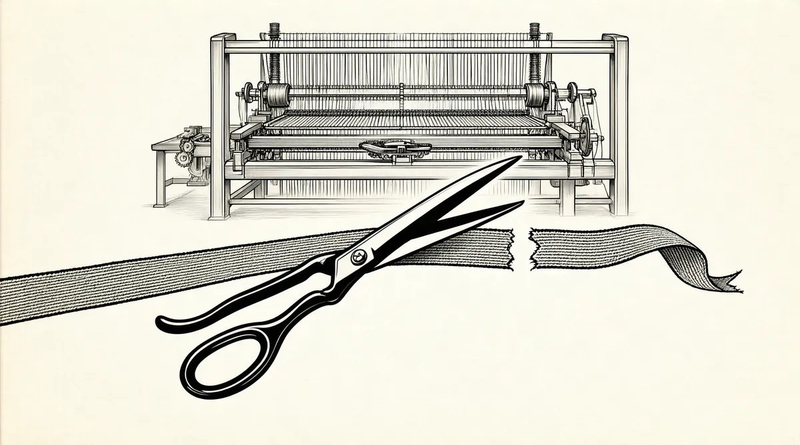

第17章 珠穆朗玛峰

随着哥伦比亚大学第二学期的开始，沃伦兴奋地忙碌起来。他父亲在第四次竞选中刚刚再次获胜进入国会。而且沃伦终于能见到他心目中的英雄了。
在回忆录中，本杰明·格雷厄姆将自己描述为一个离群索居者，一个在高中之后就再没有亲密朋友的人：“我适合成为所有人的朋友，但却无法成为他们的密友或老朋友。”1“没人能打开他的壳，人们都很敬佩他，也都很喜欢他，全都想成为他的朋友，甚于他希望旁人成为自己朋友的意愿。你接触他以后会觉得他非常了不起，但你无法成为他的知心朋友。”巴菲特后来将这种“壳”称为格雷厄姆的“保护衣”。即使是他的合伙人戴维·多德，和他的关系也从未非常亲密。格雷厄姆在理解并与他人有所共鸣方面存在非常大的困难。人们发现和他谈话是件很难受的事——他思维太理智、知识太渊博、头脑太聪明。在人前的时候，格雷厄姆很难令人感到轻松，在他的公司里，人们必须一直保持清醒的头脑。虽然他为人总是很和蔼，但他很快就厌倦和他的朋友同事进行交谈。他一生的“真正朋友和亲密友人”是他最喜爱的作者——吉本、维吉尔、弥尔顿、莱辛，以及他们专注的领域。格雷厄姆说，对他自己而言，这些人和他们所倾注的研究，比生活在他周围的人更重要，让他的记忆更深刻。
格雷厄姆出生时叫本杰明·格劳斯鲍姆。2从他出生到25岁这段时期，美国经历了4次金融恐慌和3次经济衰退。3格雷厄姆9岁的时候，他父亲过世，此后，家里的财产逐渐减少。在1907年的金融恐慌中，格雷厄姆那一心追逐名利、野心勃勃的母亲失去了自己大部分的微薄家产，最后不得不当掉首饰珠宝维持生活。格雷厄姆最早的记忆是，自己站在银行出纳窗口那里，想把母亲的支票兑现，而出纳员用清晰入耳的声音问他的同事，格劳斯鲍姆太太是否能够兑现5美元。格雷厄姆回忆，在这段时期，亲戚的好心“虽然无法令家里免于羞辱，但把他们救离了悲惨的生活”。4
不过，格雷厄姆在纽约公立学校读书期间，表现非常优异。在学校里，他用法语读维克多·雨果，用德语读歌德，用希腊语看荷马，用拉丁文读维吉尔。毕业后，他想去读哥伦比亚大学，但需要经济资助。当奖学金核查人拜访格劳斯鲍姆家后，拒绝向本杰明提供奖学金。本杰明的母亲坚信，核查人这么做的原因是家里仍然留有几张路易十六时期的椅子，还有其他几件精美的家具。不过，本杰明却肯定是因为核查人发现了自己精神上存在的“秘密缺陷”：“很多年以来，我一直和被法国人称为‘难以改正的坏习惯’（这是对手淫的委婉说法）的这个毛病进行斗争。我天生就具有的清教徒思想以及当时令人毛骨悚然的身体疾病加在一起，将我的这个坏习惯升级成为精神和生理上的大问题。”5
格雷厄姆和他的坏习惯最终一起来到了免学费的纽约城市大学，无人理会他，他也身无分文，认定这所大学的文凭无法让他在自己所渴望的这个势利而又有教养的世界里飞黄腾达。两本借来的书被人从格雷厄姆的柜子里偷走了，他必须出钱把书补回去，这成了压倒格雷厄姆的最后一根稻草，因为他根本没有零用钱。他退学了，找了一份装配门铃的工作。他一边工作，一边在心里吟诵《埃涅伊德》（Aeneid）和《鲁拜集》（Rubaiyat），甚至在检查运货单的时候，他都能在脑子里自娱自乐地创作十四行诗。最后，他又申请了一次哥伦比亚大学，而这次他得到了之前被拒绝的奖学金——事后发现上次是因为一位职员搞错了。在哥伦比亚大学，格雷厄姆成了学生明星。毕业的时候，他拒绝了法学院的奖学金，也没有接受去哲学、数学或者英语院系当老师的工作，而是听从院长的建议，进入了广告业。6
格雷厄姆的幽默感总有一种讽刺挖苦的倾向。他第一次写韵律诗是给卡博纳公司的洗衣液写的，不过，结果是被弃而不用。因为对客户来说，这首诗太过骇人：
威诺娜有一位年轻的姑娘
她从未听闻过卡博纳
她用一罐苯洗衣
她可怜的双亲现在真为她遗憾
过了这段时期之后，哥伦比亚大学校长推荐格雷厄姆去纽伯格·汉德森·洛比经纪公司工作。关于华尔街，格雷厄姆说：“我只是道听途说，以及从小说里知道华尔街的，我觉得它是一个令人激动的戏剧舞台。我非常急切地想参加它那些神秘的仪式和重大的事件。”
1914年，格雷厄姆从华尔街的最底层做起，周薪12美元，跑腿送消息。之后，他当上了助理信息员，在客户室里急速来回走动，改写黑板上的股票报价。通过传统的华尔街职业路线，格雷厄姆把这些工作提升为一项事业：他在一旁进行研究，然后某一天，一个场内经纪人把格雷厄姆写的一份报告——调低密苏里太平洋铁路债券的估值，给了巴切公司的一位合伙人，这人之后聘用格雷厄姆当了统计分析员。7多年后，格雷厄姆以合伙人的身份回到纽伯格·汉德森·洛比公司，一直待到1923年。接着，一群出资人，其中包括罗森瓦德家族的成员（西尔斯的早期合伙人），用25万美元的创业资本吸引他离开公司自己干，这笔钱能让格雷厄姆开创自己的事业。
格雷厄姆在1925年关闭了这家企业，因为他和出资人在他的薪金问题上无法达成一致。1926年1月1日，他以45万美元的资金创立了“本杰明·格雷厄姆联合账户”，资金来自客户和自有资产。不久之后，其中一个客户的兄弟杰里·纽曼愿意投资公司，并成为格雷厄姆的合伙人。他不拿分文工资，一直到他学会公司业务，并给公司带来了利润。不过，格雷厄姆坚持付给纽曼工资。纽曼为合伙公司带来了广博的商业常识以及管理技巧。
1932年，格雷厄姆在《福布斯》上写了一系列文章，其中有一篇是《难道美国企业更应关闭而非生存？》。在这篇文章中，他批评公司管理层只知道坐拥现金、坐等投资机会，而投资者却无视这些股价无法反映的价值。格雷厄姆知道如何发现和提炼出公司的价值，但是他有资金方面的麻烦。因为股票市场的损失，联合账户的资金从250万美元下跌到了37.5万美元（已考虑了分红、赎回和亏损），格雷厄姆认为自己有责任弥补合伙人的损失，但这意味着不得不让现有资金增长两倍多。要让联合账户继续存活下去，就需要有人投入一些资金。杰里·纽曼的岳父投资了5万美元，拯救了他们。1935年12月，格雷厄姆果真令资金增长了两倍，把亏损都赚了回来。
因为税务原因，1936年，格雷厄姆和纽曼将公司重组为两家公司——格雷厄姆–纽曼公司和纽曼–格雷厄姆公司。8格雷厄姆–纽曼公司收取固定费用，向公众发行在交易所交易的股票。纽曼–格雷厄姆公司则是一家对冲基金，一家私有的有限合伙公司，其合伙人个个经验老到，按照管理人业绩向格雷厄姆和纽曼支付酬劳。
虽然格雷厄姆在他的回忆录里指名道姓地说杰里·纽曼缺乏“亲和力”、要求苛刻、没有耐性、吹毛求疵，在谈判时总是过于强势，但是，这两人还是一直合作了30年。而纽曼认为格雷厄姆“非常不受人欢迎，即使是在他那数量众多的朋友圈里”，“经常和合作同伴发生争吵”，而自己最后总能修复关系。他和格雷厄姆的长期相处相容得益于格雷厄姆的保护性外衣，其他人的行为似乎从来不能干扰格雷厄姆的镇定。
一次例外是格雷厄姆和一家知名公司的管理层发生争执。在对州际贸易委员会公开发布的报告进行认真而勤勉的研究之后，他发现北方石油管道公司除了管道运输资产外，还拥有价值95美元/股的铁路债券，而这家石油运输公司的股票价格是65美元/股。不过，控制该股票的洛克菲勒基金并没有向股东透露有关该铁路债券价值的消息。股票的价格低迷，并没有反映出债券的价值，因此格雷厄姆开始悄悄买入股票，直到他的公司成为仅次于洛克菲勒基金的第二大股东。然后，他积极推动公司管理层向股东发售这些债券。北方石油管道公司是1911年破产后由标准石油公司接管的，其管理层均来自标准石油。他们和格雷厄姆兜圈子，表示公司需要留着这些债券，以便日后有能力更新老旧的石油管道。但是格雷厄姆对这些情况了解得比他们更透彻。最后，管理层干脆就这么回复：经营石油管道是一项既复杂又专业的事，你知之甚少，而我们已干了一辈子。如果你不同意我们的公司经营策略，那何不卖掉你的股份？
不过，格雷厄姆认为自己服务于公司的全体投资者，而不是他自己。所以，他没有卖出自己的股份，而是去宾夕法尼亚州的石油城参加股东大会，在会上，他是唯一一名公司职员以外的人。他提出了对铁路债券的建议，但是管理层拒绝认可，因为没有第二个人支持他的建议。在和格雷厄姆的交锋中，管理层的做法也让他感觉到有些反犹太的气息，这令他很难放弃这场战斗。在此后的一年时间里，格雷厄姆和其他投资者一起又额外购买了一些股份，准备以法律手段和管理层作战——投票表决权之战。到下一次股东大会召开的时候，格雷厄姆已经购买、积攒了足够的投票权，让另外两人进入董事会，从而倾斜了董事会天平。公司同意了格雷厄姆的提案，最后向股东派发了相当于每股价值110美元的现金和股票。
此战闻名华尔街，而格雷厄姆则继续将他的格雷厄姆–纽曼公司打造成为虽非业内最大，但却最知名的投资公司。
他令公司声名鹊起，即使这对公司的业绩产生了负面影响。他的教学直接取材于格雷厄姆–纽曼公司的案例。每次他在课堂上提到某只股票，学生都会跑去购买这只股票，从而推高股价，令格雷厄姆–纽曼公司的购买成本更高。这让杰里·纽曼有点儿抓狂。为什么要让其他人参与到公司正在做的买卖当中，从而增加公司业务的难度？要在华尔街上挣钱就意味着你得严守你的理念和想法。不过，正如巴菲特所说，“本杰明并不真的在意他所拥有的财富数量。他的确想要足够多的钱，因为他经历过1929~1933年这段艰苦的时期。不过，如果他认为他的钱已经满足需要了，那么，对他来说，其他任何事情就完全失去物质意义了。”
在格雷厄姆–纽曼公司20年的经营期里，它的年收益率比股市的业绩表现高出2.5%——在华尔街的历史上，只有少数人能打破这个纪录。2.5%这个数字听起来也许微不足道，但是经过20年的复利，这就意味着，格雷厄姆–纽曼公司的投资者，最后能比那些获得市场平均收益的人多赚65%。更重要的是，格雷厄姆获得这些超高收益的同时所面临的风险还比那些只投资股票市场的人低。
格雷厄姆主要通过他的数字分析技巧来获得高收益率。在他之前，评估证券的价值很大程度上都是在猜测。格雷厄姆首创了一套精密的系统方法来分析股票的价值，他喜欢只分析公开信息——通常是一家公司的财务报表，而即便是公司管理层的公开会议，他也很少去参加。9虽然他的助手沃尔特·施洛斯去参加过马歇尔·韦尔斯公司的股东大会，但这是施洛斯自己的想法，并不是格雷厄姆的授意。
每个周四下午收市之后，格雷厄姆的第三任太太埃斯蒂开车带他离开华尔街55号格雷厄姆–纽曼公司的办公室去哥伦比亚大学，给“普通股估值班”上课。这门课程是哥伦比亚大学的一门顶级金融课，因此，只有声誉很高且正在从事资金管理工作的人才能教授此课。
当然了，沃伦带着崇拜和敬畏仰望着格雷厄姆。他在10岁的时候——早在他了解本杰明·格雷厄姆在投资界是何许人之前——就读过北方石油管道公司的故事。如今，他希望能和他的老师互有往来。不过，在课堂之外，沃伦和格雷厄姆鲜有共同兴趣。格雷厄姆涉猎人文、社会和自然科学等领域；他写诗，是个众所周知的失败的百老汇剧作家；他还在好几本笔记本上写满了笨拙的发明想法；他还全身心地去舞厅跳舞，在亚瑟·默里的工作室里，他脚步笨重地舞动了数年，跳起舞来仍像肢体僵硬的士兵，还高声数出舞步；在晚餐宴会上，他经常中途消失，跑去演算他的数学公式、读普鲁斯特（法文），或者独自一人去听歌剧。他宁愿做这些事也不愿和无趣的公司同事待在一块儿受罪。10“我记得我学过的东西，”他在回忆录里写道，“却记不住我生活里的事。”一个例外是，他把约会看得比学习要重。
一个人如果要与一流作者竞争以吸引格雷厄姆的注意，那么，唯一途径是这人是一名女性，而且主题是性。格雷厄姆个子矮小，也没有堂堂仪表，不过人们告诉他，他那性感丰满的嘴唇和具有穿透力的蓝眼睛会让他们想起爱德华·罗宾逊。11他的五官有些部分使他像一只小精灵，但他长相并不英俊。不过，对喜欢挑战的女性来说，格雷厄姆似乎是珠穆朗玛峰：她们遇到他，就想登顶。
就格雷厄姆的三任太太而言，他的偏好变化极大：从充满热情、意志坚定的教师海兹尔·马左，到百老汇的歌舞女郎卡罗尔·维德——比他小18岁——再到第三任妻子，他的前任秘书，聪明智慧、无忧无虑的埃斯特尔·埃斯蒂·梅辛。复杂的三段婚姻源于他对一夫一妻制的完全漠视。格雷厄姆后来在他的回忆录12里这样开头：“让我以最认真、最严肃、最清醒的方式来描述我的第一段出轨。”6句话之后，他开始用尖刻的语言说明这段关系，“一点儿也不漂亮的”珍妮只有“20%的吸引力，80%的机会”。如果她的吸引力大一点儿，他在同他喜欢的女性发展性关系的时候，有失体面、恼羞成怒的机会就会少一点儿。结合格雷厄姆的两大嗜好看，他也许还为在地铁上遇到的心仪女性匆忙写过引诱性的小诗。不过，他太理性了，就算是他的爱慕者，要赢得他的目光也肯定是一大挑战。回忆录里的随后一段文字快速从婚外情转向商业，这才是真正的格雷厄姆：13
她有一艘汽船，在这艘船的船舱里，我们度过了最后一小时，记忆令人感伤。（我当时几乎没有想到过，我的公司之后会控股这家老式的汽船运输公司。）
对格雷厄姆的太太们而言，他的花心简直令人发狂。不过，沃伦当时对格雷厄姆的私生活一无所知，他一心一意地想着能从才华横溢的老师那里学到东西。1951年1月，在格雷厄姆课程的第一天，沃伦走进了一间摆放了一张长方桌的狭小教室。格雷厄姆坐在中间，周围坐着十八九个人。大部分学生年纪都比较大，还有一些是退伍老兵。有一半人不是哥伦比亚大学的学生，而是旁听这门课的生意人。沃伦又一次成了最小的一个，不过也是知识最丰富的一个。沃伦的同学杰克·亚历山大回忆说，14当格雷厄姆发问的时候，沃伦必然是“第一个举手，并立马开口发言的人”。班级的其他人都变成了本杰明和沃伦的“二重奏”的听众。
1951年，很多美国企业仍然处于极不景气的状态。格雷厄姆鼓励学生用股票市场的现实案例来解释这类低迷、无人问津的公司，比如格瑞夫兄弟桶业公司，这是一家制桶公司，沃伦有它的股票。这家公司的主营业务正缓慢衰退，不过，如果卖掉其资产和库存，并偿付负债，相对于由此而得的现金而言，其股票的价格还是存在很大的折扣。最后，格雷厄姆得出结论，公司的内在价值会得到体现，正如随河水漂流的木桶在冬天会被冰层覆盖，而在春天解冻时，会突然露出水面一样。你只能通过解读资产负债表，解密这些证明冰层下藏着一桶财富的数字。
格雷厄姆说，企业和人没有什么不同，一个人会认为自己的净资产是7000美元——价值50000美元的房子，减去45000美元的抵押贷款，加上其他储蓄2000美元。和人一样，企业有属于自己的资产，比如它生产并销售的产品，也有要支付的债务，即负债。卖掉所有资产并支付债务，剩下的就是公司的股东权益，或者叫净资产。如果有人以某个价格购买了股票，这个价格所反映的公司价值比它的净资产还要便宜，那么格雷厄姆认为，最终——“最终”是个很狡猾的用词——股票价格会上涨以反映企业的内在价值。15
这听起来简单，但是证券分析的艺术在于细节，要扮演侦探，探测出资产的真正价值，发掘被隐藏的资产和负债，思考公司能挣到什么或者不能挣到什么，要拆解细则条款，发现股东的权利。格雷厄姆的学生都知道，股票并不是抽象的几页股票凭证，它们的价值可以被分析出来——先计算整个业务的价值，然后再分成几小部分。
不过，最复杂的问题在于“最终”这个问题。股票交易价格通常在很长一段时间里都与其内在价值不一致。一名分析师可以对所有问题做出正确的计算，但从市场的角度，终其一生的投资生涯，他仍会出错。这也就是为什么要在扮演侦探的同时，你还得拥有格雷厄姆和多德所称的安全边际——也就是可供出错的足够空间。
格雷厄姆的方法或许能打动研究这种方法的人。有的人能立刻领会，将之作为一种非常巧妙的寻宝之法；而有的人则将其视为沉闷的作业而畏缩退避。沃伦的反应就如一个在山洞里度过了一生的人，从山洞中出来第一次感知到现实时，在阳光下眨着眼睛。16沃伦之前的“股票”概念来自股票凭证交易价格的波动。而如今，他将这些股票凭证看作未必能反映公司真实状况的简单符号。他立即就明白，这些纸质凭证并不是一只“股票”的象征，就像小时候一堆堆的瓶盖并不代表那些冒着泡、有不同口味、人们很想喝的汽水一样。他以前的想法瞬间消失，他一下被格雷厄姆的理念所征服，并从格雷厄姆的教学方法中获得了启示。
格雷厄姆在课堂上采用各种很巧妙、很有效果的“诡计”，他会“埋伏”两个问题，一次问一个。他的学生认为他们知道第一个问题的答案，但当第二个问题随后而来的时候，他们就意识到自己可能并不知道问题的答案。格雷厄姆会描述两家公司，一家公司状况很糟，差不多要破产了，而另一家状况良好。在请全班分析这两家公司之后，他会揭晓结果：这其实是不同时期的同一家公司。所有人都对此惊讶不已。这些都是关于独立思考的教训，令人记忆深刻，尤其是格雷厄姆的思维方式。
除了“公司A、B”的教学方法之外，格雷厄姆还常常讨论两类事实真相问题。事实1是绝对和肯定存在的，事实2是经证实和确认的。如果有足够多的人认为一家公司的股票值X元，那么价格就会变成X元，除非有足够多的人认为其股票值另外的价钱。然而，这并未影响到股票的内在价值——事实1。因此，格雷厄姆的投资方法并不是简单地购买便宜的股票。这一投资方法不折不扣地源于对心理学的了解，这种方式的使用者可以避免因情绪波动而影响决策。
在格雷厄姆的课堂上，沃伦学到了三大主要原则：
•一股股票是拥有一家企业一小部分的权利，是你愿意为整个企业所支付价格的某一部分。
•使用安全边际。投资是建立在估计和不确定性的基础之上的。大范围的安全边际保证了不会因为误差而导致失败。最重要的是，前进的方法首先是不要后退。
•“市场先生”是你的仆人，而不是你的主人。格雷厄姆假设了一个喜怒无常的角色叫“市场先生”，他每天都会提供股票买卖的机会，而这些价格经常都是不合理的。“市场先生”的情绪不应该影响你对价格的看法。不过，他真的会一次又一次地提供低买高卖的机会。
在以上观点中，安全边际的观点最重要。一股股票可能是一家公司的一部分所有权，而你可以评估股票的内在价值，但是，有了安全边际，你就可以高枕无忧。格雷厄姆用不同的方法构成他的安全边际。在购买价格远远低于他所认为的价值的股票时，他也从来不会忘记债务风险。虽然20世纪50年代成为美国历史上最繁华的时代之一，但是格雷厄姆早期的经历让他心有余悸，并让他养成了假设最坏可能的习惯。从他在1932年发表于《福布斯》的文章可以看出，格雷厄姆看待企业时更多考虑的是倒闭价值而不是存活价值，并多以公司已经倒闭，即关门并被清算时的价值来思考一只股票的价值。格雷厄姆总是暗暗回顾20世纪30年代，当时有非常多的企业倒闭。他一直让公司保持小规模运作，部分原因就在于他非常厌恶风险。他很少过多地购买任何公司的股票，无论公司经营得多完美。17这表示格雷厄姆的投资公司持有大批公司的股票，需要精心管理。这无数股票的售出价的确低于企业的破产清盘价值，令巴菲特成了格雷厄姆的狂热追随者。但是，他并不赞成格雷厄姆购买如此多企业的股票。巴菲特把自己的所有资金都投到一只股票上：“本杰明总是告诉我，GEICO的价格太高了。以他的标准，GEICO并不是应该购买的股票。不过，到了1951年年底，我还是把自己75%左右的资产都投资到了GEICO。”无论如何，沃伦还是很崇拜他的老师，即使他并不非常赞同格雷厄姆的某一个理念。
随着春季学期一天天过去，沃伦的同班同学逐渐接受了教室里的“二重奏”常规剧目。杰克·亚历山大说，沃伦“是个非常专心致志的人，他可以专注得像一只聚光灯，几乎是一天24小时、一周7天保持专注，我都不知道他什么时候睡觉”。18沃伦能够引述格雷厄姆的投资案例，也能提出自己的投资案例。他常去哥伦比亚大学图书馆，看以前的老报纸，一读就是好几个小时。
我会查找1929年的报纸，不过，我找不到足够的报纸。我什么都看，不只是关于商业和股票市场的。历史很有趣，而报纸上就有关于历史的东西，只需读一些段落、新闻，甚至是广告。报纸把你带进一个完全不同的世界，曾亲眼目睹历史的人会告诉你一切，而你如同真的生活在那个年代。
沃伦收集信息资料，剔除掉其他人的思维方式所形成的偏见。他花很多时间阅读穆迪和标准普尔的手册，寻找股票。不过，格雷厄姆每周的课程是沃伦最为期盼的，甚于他所做的其他一切事情。他甚至说服信服自己的弗雷德·斯坦贝克加入进来，旁听一两堂课。
对班级里的其他人来说，沃伦和他老师之间的“化学效应”是显而易见的，有一个人特别留意到了沃伦。比尔·鲁安是基德尔·皮博迪公司的一位股票经纪人，在读了两本重要而难忘的书《消费者的游艇在哪儿？》和《证券分析》之后，他通过自己的母校哈佛商学院找到了格雷厄姆。鲁安喜欢讲关于他股票经纪工作的事情，虽然他总信誓旦旦地说他的第一职业选择是在广场酒店当电梯服务员，不过，一成不变的漫长等待让这一未来预期偏了轨。19他和沃伦一拍即合。但是，无论是鲁安，还是格雷厄姆其他任何一个学生，包括沃伦在内，都不曾想过去看看格雷厄姆在课堂之外的样子。不过，沃伦总是找理由去拜访他刚刚认识的在格雷厄姆–纽曼公司的新朋友沃尔特·施洛斯。20沃伦对施洛斯有了更多了解，知道他的妻子在婚后的大部分时间里都患有抑郁症，而他一直照顾着妻子。21和戴维·多德一样，施洛斯非常忠诚，而且立场坚定，这都是巴菲特正在他人身上寻找的品质。他也羡慕施洛斯的工作。后者通过打扫厕所，能免费换取一件灰色的实验室风格的细棉质夹克，格雷厄姆–纽曼公司的每个人都穿着这种衣服。在他们填写表格（格雷厄姆需要用这些表格来验证股票是否符合自己的投资标准）的时候，这件衣服可以防止自己的衬衣袖子被弄脏。22最重要的一点是，沃伦想要为格雷厄姆工作。
随着学期末的临近，班里的其他同学都忙着安排他们的未来。鲍勃·邓恩前往美国钢铁公司，这可能是当时美国最有声望的公司。几乎所有的年轻人都将努力在大工业公司里面向上爬作为通向成功之路。在艾森豪威尔领导的战后及大萧条后期的美国，安稳的工作非常重要，而美国人都相信，从政府到大企业，这些机构在本质上都是乐善好施的。在机构的蜂房里面找到一间巢室，并学会如何适应，这是人们通常的预期。
我觉得，班里没有一个人在思考美国钢铁公司是否是一家好公司。我的意思是说，这是一家大公司，但是他们并没有考虑过，他们正在登上哪一类“列车”。
沃伦脑子里有一个目标。他知道，如果格雷厄姆雇用了他，他会胜过其他人。虽然沃伦在很多事情上都缺乏自信，但在股票这个专业领域，他总是很有底气。他向格雷厄姆毛遂自荐，到格雷厄姆–纽曼公司工作。即使是梦想到格雷厄姆这位大人物的公司工作，也需要胆识和勇气，不过，沃伦就是这么闯劲十足，毕竟，他是本杰明·格雷厄姆的明星学生，班里唯一一个得“A+”的人。如果沃尔特·施洛斯可以在那里工作，为什么他不可以？为了抓住这个机会，他提出可以无薪工作。他前往格雷厄姆的公司，请求得到一份工作，心里的自信远远胜过他乘车去芝加哥，接受哈佛商学院面试的时候。
格雷厄姆拒绝了他。
他人很好，只是说：“看，沃伦，在华尔街，‘白鞋’公司，即大型投资银行，不雇用犹太人。我们这里只有能力聘用为数不多的员工。因此，我们只用犹太人。”办公室里的两位女性雇员的确是犹太人，公司所有人都是犹太人。这有点儿像是格雷厄姆版本的“反优先雇用行动”。事实是，50年代真的存在对犹太人极大的歧视，对此，我很理解。
巴菲特发现，对格雷厄姆，自己无法说出任何表示不满的话，即便在数年之后也是如此。当然，失望是难免的。格雷厄姆难道不能为他的得意门生破一次例雇用一个不花他一分钱的人吗？
将老师奉为神明的沃伦不得不接受这样一个现实，即格雷厄姆不认为与他存在个人交情，格雷厄姆认定了这点，因此他不会破例，即使沃伦是他的学生中最优秀的一位。沃伦并不称格雷厄姆的心意，至少暂时还没有。沃伦很灰心失望，一直到毕业时才再一次振作精神，踏上了列车。
不过沃伦还有两件聊以自慰的事，他回到奥马哈，感觉自己属于那里。在奥马哈，他更容易追求他的爱情，因为他遇到了一位奥马哈女孩，并爱上了她。和往常一样，他所喜欢的这个女孩还没喜欢上他。不过，这一次，沃伦下定决心要扭转她的心意。
[1]1964年，约翰逊总统首次促使“反优先雇用行动”成为联邦法律，极大地推动了美国社会男女平等和种族平等，尤其是作为弱势和贫困主体的美国黑人、西语裔、亚裔和妇女。——译者注